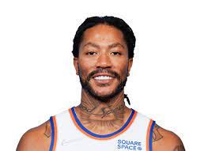
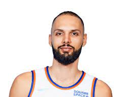
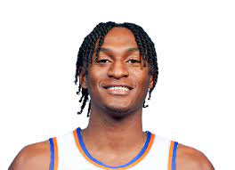
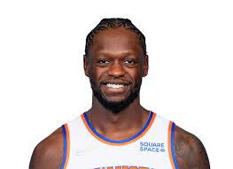
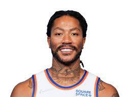
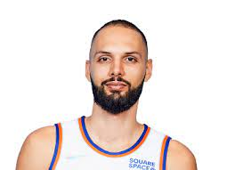
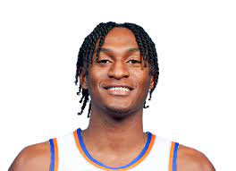
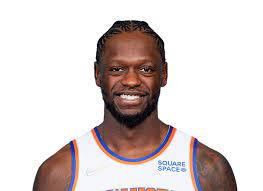
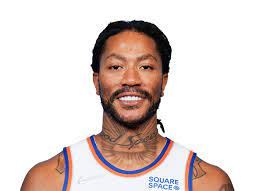
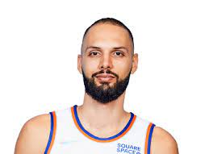
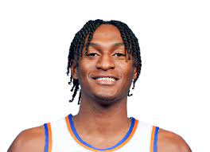
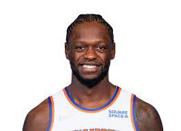
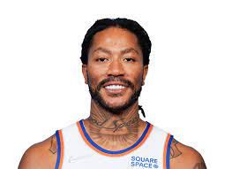
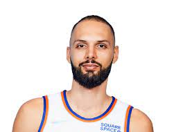
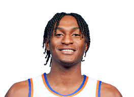
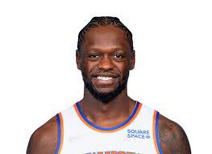
 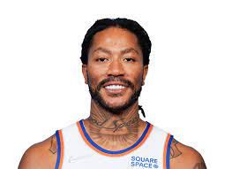
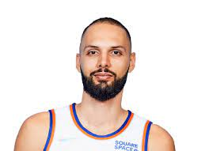
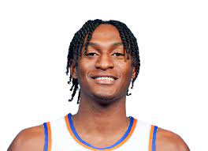
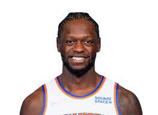
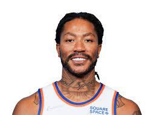
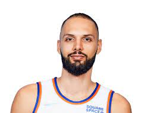
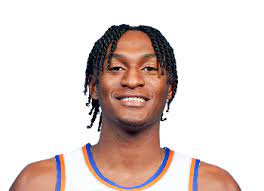
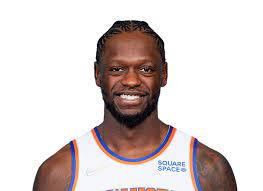
Here are your 2021-2022 New York Knicks! These indivudals light up the garden every night, along with the faces of Knicks fans all across the globe. After clinching their first playoff birth in 8 years last season, they are ready to bring quality basketball back to the worlds greatest arena, in front of the worlds most passionate fans.